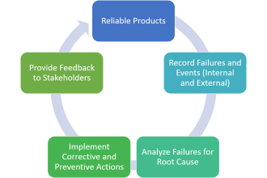

Closing the Loop to Improve Your Products and Processes
In reliability engineering, FRACAS is an acronym for Failure Reporting, Analysis, and Corrective Action System. FRACAS is the term used to designate a process by which companies track product defects and effectively respond and make corrections to fix problems. Product defects may be tracked during product design, testing, manufacturing, and field deployment. A comprehensive FRACAS allows you to efficiently track issues and ensure that reliability problems are addressed in a timely and successful manner. The FRACAS process is used throughout all types of industries. Successful FRACAS programs provide for:
- Easy and timely collection of accurate failure and maintenance data from the lab, field, and supply chain in standardized and compatible data structures.
- Total elimination of complicated and redundant paper-based data records throughout the failure collection process, thereby avoiding dual reporting.
- Effective data analysis to determine root cause mechanisms and real-time failure trends for fast and accurate decision-making.
- Accurate historical reliability performance measures, such as mean time between failures (MTBF), mean time to failure (MTTF), mean time to repair (MTTR), and availability for use in determining appropriate corrective actions.
- Customizable reports that facilitate and support corrective action decisions by both management and engineering personnel regarding the improvement of designs, manufacturing processes, and field support systems.
- Optimized workflow management for timely dissemination, information accessibility, and rapid feedback and approval cycles to fully support Collaborative Engineering, Six Sigma, and ISO initiatives.
- Continued monitoring and testing to ensure that implemented corrective actions either prevent failure recurrence or simplify or reduce maintenance tasks.
- Support of legacy systems and contribution to a common database for reliability, maintainability, and system component and part information.
- Automatic conveyance of all failure data and subsequent analysis results to product and system designers to drive design innovation.
Closed-Loop System
To provide such features to the various workgroup and enterprise levels that need them, a FRACAS must be an aggressive closed-loop system that is configurable, flexible, and scaleable! This means that all reported failures and faults must be entered in the FRACAS in an appropriate and controlled manner so that they can then be analyzed and corrective actions identified, implemented, and verified. The knowledge gained from this process must then be fed back into the design, manufacturing, and test process so that quality and reliability are improved. A simplified version of the closed-loop feedback path for a FRACAS follows.
A FRACAS formally captures predetermined types of data about a failure in an Incident Failure Report (IFR). Completed IFRs are submitted to analysts so that they can identify the corrective actions that are to be implemented to prevent these failures from recurring. Whenever corrective actions are implemented and verified or are otherwise determined to be unnecessary, the IFR is closed. To reduce the possibility of an unmanageable backlog of open IFRs, management periodically reviews all unresolved IFRs to ensure their assignment and eventual closure.
A FRACAS can be used throughout the life cycle of any hardware or software product or system process to track failures, incidents, issues, and even enhancements or suggestions. By implementing a FRACAS during the initial design phase, significant cost savings can be realized from early problem correction, when even major design changes can still be considered to eliminate or reduce susceptibility to known failure causes. Additional benefits of implementing corrective actions while performing in-house tests and inspections are the many opportunities that exist for determining if these corrective actions adequately solve the reported issues.
If a FRACAS is not in place before product inspection or testing begins, problems often go totally unrecorded or insufficient data is captured. If a FRACAS is not in place before the product or process in put into production, it is unlikely that failure and maintenance data will be collected in a structured and timely manner. Consequently, determining and implementing effective corrective actions that either prevent failures from recurring or simplify maintenance tasks will become very difficult.
Failure Logging
All problems that occur during inspections, tests, and field use must be entered in the FRACAS using an established procedure for recording accurate failure information. Personnel who enter IFRs in the FRACAS should be properly trained to precisely capture the required data. To make entering data in IFRs easy, the entry forms for capturing failure information should be tailored to your hardware, software, or process. Once an IFR is created, the FRACAS should alert the responsible analyst to its existence and indicate the next required action.
Failure Analysis
An analyst examines the information entered in an IFR to determine the root cause of the failure and identify contributing factors. Methods for analyzing the root cause range from simple investigations of circumstances surrounding a failure to sophisticated laboratory analyses of failed parts. Once the analyst has established the root cause and contributing factors, he or she must develop logically derived corrective actions. As the number of IFRs in the FRACAS grows, the analyst can call upon the historic data for related or similar failures for help in resolving what the appropriate corrective actions for a failure should be. Once corrective actions are noted, the FRACAS should alert the technician who must perform them.
Corrective Action and Verification
When a technician is implementing corrective actions, he or she may be required to submit time or utilization logs containing operational hours and other time-related data needed to calculate MTBF. The technician may also be required to submit field service logs indicating maintenance times, actions, and part replacements. Visual monitoring or testing must then be performed to indicate that the corrective actions taken have either eliminated the failure or reduced its occurrence. Although verification is sometimes performed by the same or another technician, close out of the IFR is generally performed only by a manager.
Workflow Management
To be effective in meeting internal and external commitments, a FRACAS must provide for effectively managing the resources and strategies necessary to address open IFRs. Workflow management features within your FRACAS should facilitate the failure analysis process. Managers should be able to assign priorities to failures based on urgency, budgets, and the availability of personnel. To ensure that all IFRs are closed in a timely manner, managers should be able to track IFRs by priority levels, workflow resolution activities, resource assignments, and many other criteria. Management should also strive to improve quality and reliability by participating in the development, implementation, and verification of corrective actions and periodically reviewing failure trends.
Closing the Loop
A FRACAS builds upon and leverages all of the data entered in its centralized database to ensure early and sustained achievement of improved reliability and maintainability for your product or process. The structured procedure for entering, analyzing, and resolving IFRs produces valuable data about the reliability of your product or process and the efficiency of your organization to address issues. Analyzing and reporting on the IFRs in your FRACAS is vital to the efficiency and profitability of your organization. In addition to complete failure summary reports listing events and problems for specified time periods, your FRACAS should be able to generate root cause analyses (RCAs), problem analysis reports (PARs), material disposition reports (MDRs), product performance reports (which provide MTBF, MTTF, MTTR, availability, etc.), and failure trend charts. Feeding this critical information back into your design, manufacturing, and testing process provides the closed loop that promotes continuously improving quality and reliability throughout the life cycle of your product or process.
If you would like additional information about how PTC Windchill FRACAS can close the loop to dramatically improve the quality and reliability of your products and processes, please contact us.